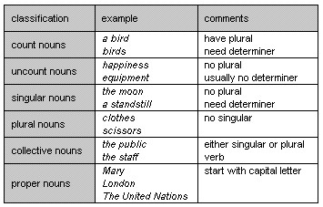

1.14 Identifying people and things: nouns
A noun is used to identify a person or thing. In this chapter we describe six main types of noun. They are classified according to whether they have a plural form, whether they need a determiner in front of them, and whether they occur with a singular verb or a plural verb when they are the subject of the verb.
The six types are:
Many nouns have a number of different meanings, and so can be, for example, a count noun for one meaning, an uncount noun for another, and a singular noun for another.
There are a few other groups of nouns with special features. These are dealt with in paragraphs 1.60 to 1.93.